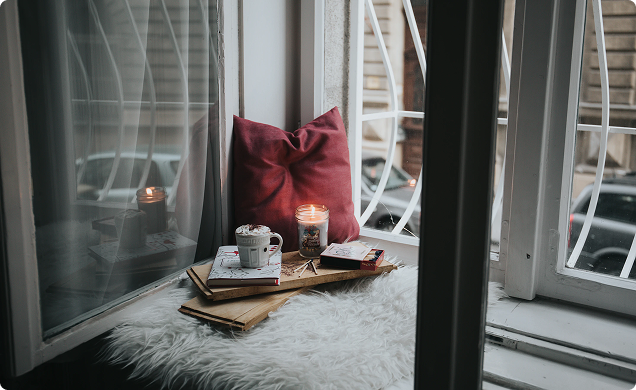
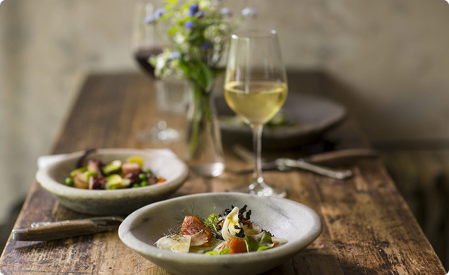

Vivre
vivre 這個品牌名稱源自法語,意為"生活"、"活著"。它象徵著我們對於高品質生活的熱愛與追求。vivre 旨在成為一個分享美好生活體驗、發掘生活質感的平台。
我們的品牌價值
- 熱愛生活,好奇心永存
- 品味獨具,講究生活質感
- 分享真實生活,啟發生活靈感
- 推廣慢生活哲學,注重內在修為
風格特色
vivre 所展現的風格特色,可以用知性、親和、用心、優雅與獨特這些詞語來概括。我們講求內容的原創性與探索精神,不跟風追隨潮流話題,而是真誠分享獨特的生活視角與體驗。無論是旅行、美食、居家、時尚等生活領域,我們都希望能夠呈現出與眾不同、縝密入微、內外兼具的見解,給讀者帶來嶄新的感受和啟迪。
無論您是對美食、旅行、居家生活還是時尚風尚有獨到的見解和體會,只要切合vivre的價值理念與風格調性,我們都熱烈歡迎您加入這個平台,與我們一起分享和交流生活的點點滴滴。
